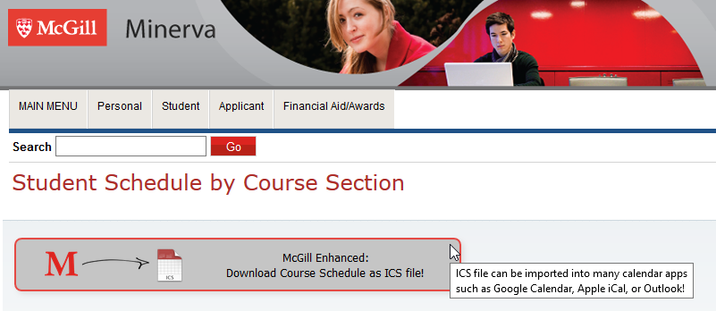

McGill Enhanced Features
Extension Menu
McGill Quick Links
Click on the McGill Enhanced icon in the chrome menu bar to access the extension menu and various McGill quick links such as email, Minerva, MyCourses, etc.
Other Resources
In addition to the McGill quick links, you can also access other useful resources from the McGill Enhanced menu.
McGill.ca Course Overview Pages
Year Menu Bar
If you end up on another year's version of a given McGill.ca page, quickly jump to the current year's version or any other year by using the year menu bar.
Instructor Section
Click the Google button to view a google query for instructor reviews. Click the Mercury button (Must be already signed into Minerva) to view the mercury profile and evaluations for an instructor. The term icons now visually indicate which instructors are teaching which terms (Fall, Winter, Summer). Click an instructor name to view other courses taught by an instructor.


Sidebar: Course Reviews
Access Docuum course reviews and Mercury course evaluations (must already be logged into the Minerva system) directly from the sidebar of a course overview page.
Sidebar: Lecture Recordings
Access archived lecture recordings for certain courses (these archives are hosted at lrs.mcgill.ca) from the sidebar of a course overview page.
Sidebar: Minerva Registration
Access the Minerva registration page for a course directly from the sidebar (must already be logged into the Minerva system).
Sidebar: Other Resources
Access course documents in Docuum or other resources for a given course (such as the CSUS guide for COMP courses) from the sidebar.
Sidebar: Visual Schedule Builder
Access the Visual Schedule Builder course listing for a course directly from the sidebar.
Sidebar: Related Courses
View other courses in the programs mentioned in the current course overview page.
Visual Schedule Builder
One-Click Registration
Instead of having to copy the CRN codes from VSB and paste them into Minerva to register, simply click the McGill Enhanced button to register for your courses (must already be logged into Minerva).

Minerva
Schedule Downloader
From Minerva > Student Menu > Registration Menu > View Student Schedule by Course Section, you can click the McGill Enhanced button to download your course schedule as a .ICS file which can then be imported into Google Calendar, Apple iCal, or Microsoft Outlook.
